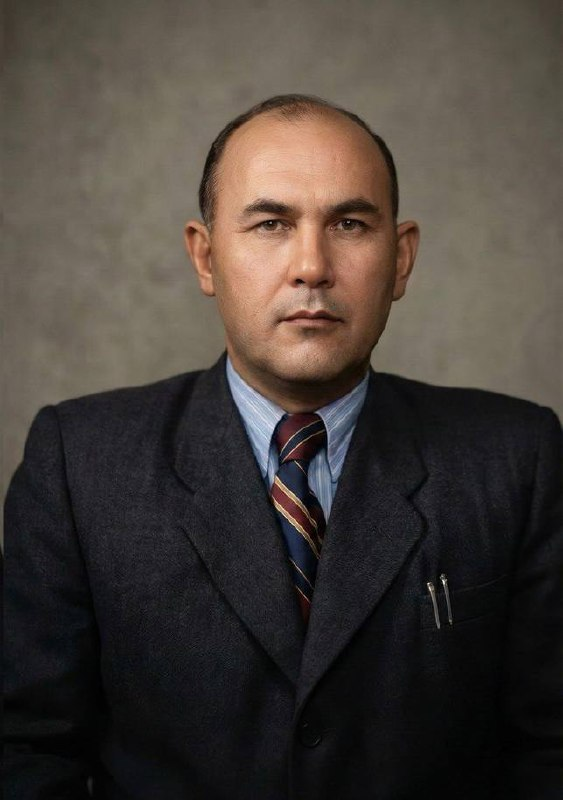

Biography · Биография
Гулям Бабаджанов was born in 1907 in the village of Ikan (Иқон), near the ancient city of Turkestan, into a peasant (dehqon) family. His father died when Gulam was just one year old. He was raised by his grandfather until the age of eight, and then by his mother until the age of eleven.
From 1918, at the age of eleven, the young Gulam began working to survive — tending other people's livestock, helping with planting and harvest. During the winter months, he attended a newly established school in the village, part of the early Soviet campaign to bring literacy to Central Asian communities.
In 1922, at just fifteen years old, Babadjanov made the journey to Tashkent — the capital of Soviet Turkestan — and enrolled in the preparatory department of the Men's Institute of Education (Институт просвещения). He graduated in 1928 after six years of study, transforming himself from a self-taught farmhand into a trained specialist. That same year he proceeded to Samarkand for advanced studies.
His life trajectory embodied the Soviet-era ideal of the scholar-administrator — where intellectual achievement, not party connections, was the engine of advancement:
Born into a peasant family. Father dies when Gulam is one year old. Raised by grandfather, then mother.
Begins working — tending livestock, farming for others. Studies in winter at a newly established village school.
Travels to Tashkent alone. Enters the Men's Institute of Education (preparatory department).
Completes six years of study in Tashkent. Proceeds to Samarkand for advanced education.
Specializes in sericulture under mentor Professor Alexander Iosifovich Fedorov. Prepares dissertation on improving silkworm breeding methods for industrial silk production. Rises through academic ranks.
Career interrupted by 11 months of imprisonment following a false anonymous denunciation. A fair and attentive judge dismissed the baseless charges and freed Babajanov from further repression.
Appointed Director of the Tashkent Agricultural Institute. Post-war Uzbekistan needed agricultural specialists, and under his leadership thousands of students graduated. He participated in developing numerous scientific research programs in agriculture and education.
During World War II, directed production of parachutes from pure silk (mulberry silkworm) for the Soviet defense. Both grandfathers — Gulam and Amin — served in the highest strategic echelon of the country's war effort.
Passed away at the age of 48 following an unsuccessful medical operation, leaving behind his wife Habiba, seven young daughters, and an enduring legacy in sericulture science and agricultural education.
Scientific Legacy · Научное наследие
Babadjanov's primary scientific contribution lay in sericulture (шелководство) — the cultivation of silkworms (Bombyx mori) and the management of mulberry (Morus) plantations that sustained them. His work was not merely academic; it was the scientific backbone of a regional industry stretching back centuries.
Genetic Conservation
Perhaps his most enduring contribution was the maintenance and development of the genetic fund (генофонд) of silkworm varieties adapted to the harsh continental climate of southern Kazakhstan. These locally adapted strains — capable of thriving in extreme temperature swings and low humidity — represented irreplaceable biological capital accumulated over generations of selective breeding.
Applied Agronomy
His research extended to optimizing the entire production chain: mulberry cultivar selection, leaf quality assessment for different larval stages, cocoon harvest timing, and disease prevention in silkworm populations. This was science that fed directly into the livelihoods of thousands of families across the Turkestan region.
The Ikan–Turkestan Nexus
The village of Ikan (Икан) holds a unique place in the agricultural and intellectual history of southern Kazakhstan. Situated near Turkestan — one of Central Asia's oldest cities and home to the mausoleum of Khoja Ahmed Yasawi — Ikan was part of an oasis zone where irrigated agriculture had flourished for millennia.
The ethnic Uzbek communities of Ikan specialized in the most knowledge-intensive forms of agriculture: sericulture, horticulture, and viticulture. These were not simple grain crops — they demanded intimate understanding of biology, precise timing, and generational transmission of technique. A family that raised silkworms carried in their practice a sophisticated understanding of:
- Temperature and humidity control (proto-climate science)
- Larval nutrition optimization (applied biology)
- Disease identification and quarantine (epidemiology)
- Selective breeding for desirable cocoon traits (genetics)
- Post-harvest processing of raw silk (materials science)
Babadjanov was the culmination of this accumulated human capital. What his ancestors practiced as traditional craft, he systematized as Soviet science. The Ikan-Turkestan nexus — village knowledge flowing into academic institutions — found its highest expression in his career.
Sericulture & Strategic Importance
Шелководство и стратегическое значение
Грена
Гусеницы
Кокон
Бабочка
Шёлковая нить
Silk in the Soviet Union was far more than a luxury textile. It was a strategic dual-use material of significant military and economic importance:
Defense Applications
Natural silk was essential for manufacturing parachute suspension lines. Its unique combination of tensile strength, elasticity, and light weight made it irreplaceable for airborne operations. Soviet paratroopers quite literally depended on the output of sericulture institutes like the one Babadjanov led.
Currency & Trade
Raw silk and silk products were valuable export commodities that earned hard currency for the Soviet state. The silk industry of Central Asia was a significant contributor to the USSR's foreign trade balance.
Industrial Applications
Beyond textiles and military use, silk found applications in surgical sutures, electrical insulation, and specialized industrial fabrics — making sericulture research a matter of genuine state interest.
Then & Now · Тогда и сейчас
The path to academic leadership that Babadjanov walked has changed fundamentally. A comparison illuminates what has been gained — and lost.
🎓 Soviet Era (Babadjanov's time)
Path to rector: Field work → Research → Dissertation → Chair → Dean → Rector
Key credential: Scientific publications, experimental results, peer recognition
Timeframe: 25–35 years of continuous scholarly work
Authority source: Deep domain expertise — the rector could discuss any technical problem in his field
🏢 Post-Soviet Era (present)
Path to rector: Often administrative/political connections, ministerial appointment
Key credential: Management experience, political alignment, sometimes formal credentials of uncertain rigor
Timeframe: Variable — can be rapid with the right connections
Authority source: Institutional position rather than personal expertise
Babadjanov belonged to a generation where the title "professor" or "rector" carried the weight of genuine accomplishment. The scholar-administrator was not merely a manager of an institution — he was its intellectual center of gravity, capable of evaluating research, guiding dissertations, and contributing original findings well into his administrative tenure.
Gallery · Галерея
From the office to the field — photographs from the family archive.



Family Legacy · Наследие семьи
Gulam Babadjanovich Babadjanov's legacy extends beyond his scientific contributions and institutional leadership. Together with his wife, Habiba Mirsagatova (Хабиба Мирсагатова) — herself a People's Teacher of the Uzbek SSR (Народный учитель УзССР) — he raised seven daughters: Elmira (endocrinologist, PhD), Anila (ophthalmologist), Khursana (philologist, PhD), Ravshana (cardiologist), Dilbar (chemical engineer), Gulrano (musician & educator), and Mekhriniso (musician, philologist & educator) — in a home where learning and devotion to family were inseparable.
Habiba was a remarkable mother and educator — nurturing, steadfast, and deeply devoted to her daughters. In a household shaped by the demands of academic life and public service, she was the center around which everything held together. Left a widow at just 40 years old, she ensured every one of her seven daughters received a higher education. The warmth and cohesion of the Babadjanov family was as much her creation as Gulam's scholarly achievements were his.
After 1955 · После 1955 года
When Gulam passed away in 1955 at the age of 48 following an unsuccessful medical operation, his youngest daughters were still children. Habiba, left a widow at just 40, together with the eldest daughter Elmira, took on the immense responsibility of raising the six younger girls. It was not easy — a widow with seven daughters in Soviet Central Asia — but Habiba's strength and Elmira's early maturity ensured that every one of the sisters was raised with dignity, education, and love. All seven daughters went on to receive higher education and build distinguished careers.
His life story — from the mulberry groves of Ikan to the rector's office — represents a broader narrative of Central Asian intellectual achievement during the Soviet period. Families like the Babadjanovs navigated between traditional agricultural knowledge and modern scientific institutions, between their Uzbek cultural identity and the demands of a multinational state, between village roots and cosmopolitan education.
The family's roots in Ikan, their connection to the land and to the ancient craft of sericulture, remain a source of identity and pride. The seven daughters, the grandchildren, and the great-grandchildren of Gulam and Habiba are spread across the world today, yet they remain a single cohesive family — a testament to the foundation their parents built. This memorial page exists to ensure that the story is not lost — that future generations can find and know it.